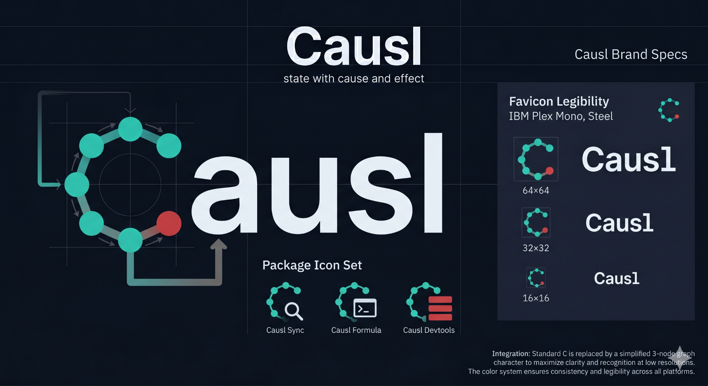

Causl exists for applications where state is not a bag of values. It is a live model of causes, effects, derivations, constraints, async resources, conflicts, and committed snapshots.
Causl is named for causality: the relationship between what changed, what depends on it, and what the system is now allowed to show. The brand should feel precise because the product is built around precision: canonical facts change inside transactions; dependent values recompute deterministically; observers see coherent snapshots; stale async results are rejected by version; and conflicts become visible records instead of hidden side effects.
The visual language is a directed graph becoming legible. The logo’s open C is not a decorative circle. It is a causal path: nodes, propagation, and one highlighted commit/conflict point. The system starts complex, then resolves to a trustworthy state.
When application state turns into a rat's nest, Causl goes in. It follows every dependency, blocks stale writes, records conflicts, and commits only consistent snapshots.
Positioning
Not another state store.
Causl is an engine for applications where ordering, derivation, async freshness, and consistency are first-class correctness concerns.
Promise
Commit once. Observe coherence.
The brand promise is not speed alone. It is the confidence that users and subscribers only see committed, explainable state.
Attitude
Calm under complexity.
The identity avoids toy-like mascot energy. It is diagrammatic, precise, dark, and elegant — built for serious developer adoption.
Logo System
A causal path shaped as a C.
Use the attached Causl mark as the primary symbol. It should be paired with a clean wordmark, ample spacing, and a dark technical surface whenever possible.
Shape: an open C built from directed graph nodes. It signals causality, dependency tracking, and propagation.
Cyan nodes: stable facts, derived values, and clean propagation paths.
Coral node: commit point, conflict point, or the place where causality becomes visible.
Wordmark: use “Causl” with a capital C and lowercase remaining letters. Do not use all-caps except in tiny metadata labels.
Clearspace: keep at least one node diameter around the mark. Do not crowd the graph path with borders, text, or UI badges.

Color System
Dark graph workspace. Sharp semantic accents.
The palette should distinguish substrate, live propagation, commits, conflicts, and successful synchronization. Cyan is the signature; coral is reserved and meaningful.
The Causl Brand Specification §8 defines a dark terminal theme with semantic neon accents — each color maps to a state concept. Every chip below matches the value causl-org/css/site.css uses verbatim. WCAG contrast against the dark surface (Void Black, #070A0F) is annotated for every text-eligible token.
Typography and layout should make the semantics readable: clean hierarchy, monospace labels, code-first examples, and UI primitives that look inspectable.
Typography
Inter / Geist IBM Plex Mono
Use a neutral sans serif for product and docs, paired with a crisp monospace for commits, IDs, graph terms, and package names.
const graph = createCausl()
const total = graph.derived('total', get =>
get(quantity) * get(rate)
)
graph.commit('update-rate', tx => {
tx.set(rate, 125)
})
// subscribers see one committed snapshot
Causl should look like a formal system made usable — not a toy state library with a logo.
Do
Use the dark theme as the primary brand environment.
Use Causal Cyan for active graph paths and the logo mark.
Reserve Conflict Coral for meaningful conflict, error, or commit contrast.
Prefer real diagrams over abstract decorative networks.
Keep copy specific and technically grounded.
Don’t
Do not make the brand mascot-first.
Do not use random node spaghetti with no semantic meaning.
Do not overuse coral; it loses meaning quickly.
Do not position Causl as a simple state-store replacement.
Do not use cartoonish hacker visuals for the core brand.